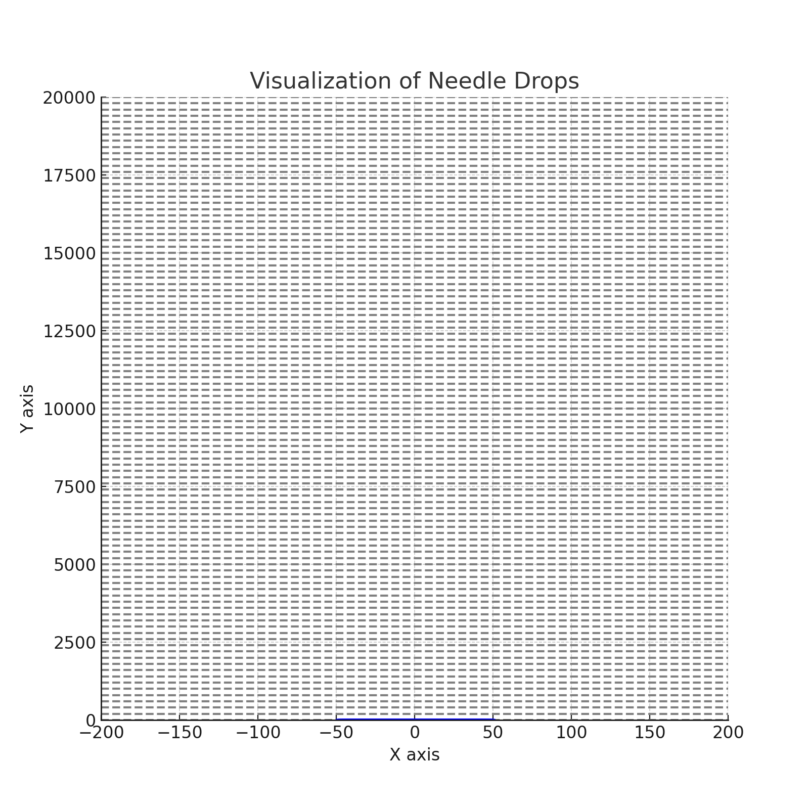

Problem 2
Estimating π Using a Circle
1. Theoretical Foundation:
The ratio of points inside a circle to the total number of points within a square can be used to estimate the value of π. To illustrate this, we consider a unit circle inscribed in a square with side length 2 (a square with vertices at (-1,-1), (1,-1), (1,1), and (-1,1)).
For a random point inside the square, the probability of that point lying inside the circle is the ratio of the area of the circle to the area of the square.
- The area of the circle is π * r², and since the radius of the unit circle is 1, the area becomes π.
- The area of the square is 2 * 2 = 4.
Thus, the ratio of points inside the circle to the total number of points inside the square is approximately π/4.
Formula Derivation:
For a unit circle (r = 1) inscribed in a square, the formula to estimate π is:
2. Simulation:
- Generate random points within a 2D square (e.g., with coordinates between -1 and 1).
- For each point, check whether it lies inside the unit circle using the equation \(x^2 + y^2 \leq 1\).
- Estimate π by calculating the ratio of points inside the circle to the total number of points and multiplying by 4.
3. Visualization:
Create a plot to visualize the randomly generated points. Distinguish between points inside the circle (marked with one color) and points outside the circle (marked with another color).
4. Analysis:
- Accuracy Improvement: As the number of random points increases, the estimate of π will converge to the true value of π.
- Convergence Rate: The accuracy improves as the square root of the number of points, i.e., the error decreases by a factor of 1/√N, where N is the number of points.
- Computational Considerations: This method can be computationally expensive as the number of points grows, but it is simple to implement in simulations.
Estimating π Using Buffon’s Needle
1. Theoretical Foundation:
Buffon’s Needle problem involves dropping a needle of length \(l\) onto a floor with parallel lines spaced a distance \(d\) apart. The probability that the needle crosses one of the lines can be used to estimate π.
The formula for estimating π is:
Where: - \(l\) is the length of the needle, - \(d\) is the distance between the parallel lines, - \(N\) is the number of needle drops, - \(C\) is the number of times the needle crosses a line.
2. Simulation:
- Simulate the random dropping of a needle onto the plane. The angle at which the needle lands and the distance from the nearest line must be chosen randomly.
- Count the number of times the needle crosses a line.
- Use the formula to estimate π based on the number of crossings.
3. Visualization:
Create a graphical representation of the simulation, showing the needle positions relative to the lines. This will help visualize how the needle placement and line crossings affect the estimate.

4. Analysis:
- Effect of Needle Drops: As the number of needle drops increases, the estimate of π will become more accurate.
- Convergence Rate: Similar to the circle-based approach, the accuracy improves as the number of trials increases, but the rate of convergence depends on the geometry and the randomness in the simulation.
- Comparison with the Circle-Based Method: Buffon’s Needle requires fewer random numbers to generate than the circle-based method for a comparable level of accuracy, but the convergence rate may be slower.